TikTok LIVE Assistant 是什么
TikTok LIVE Assistant 是在 C 端内一个长期存在的助手入口。用户既可以在这里接收主播报告、VIP 权益与活动邀约等消息，也可以围绕这些内容继续提问并获得帮助
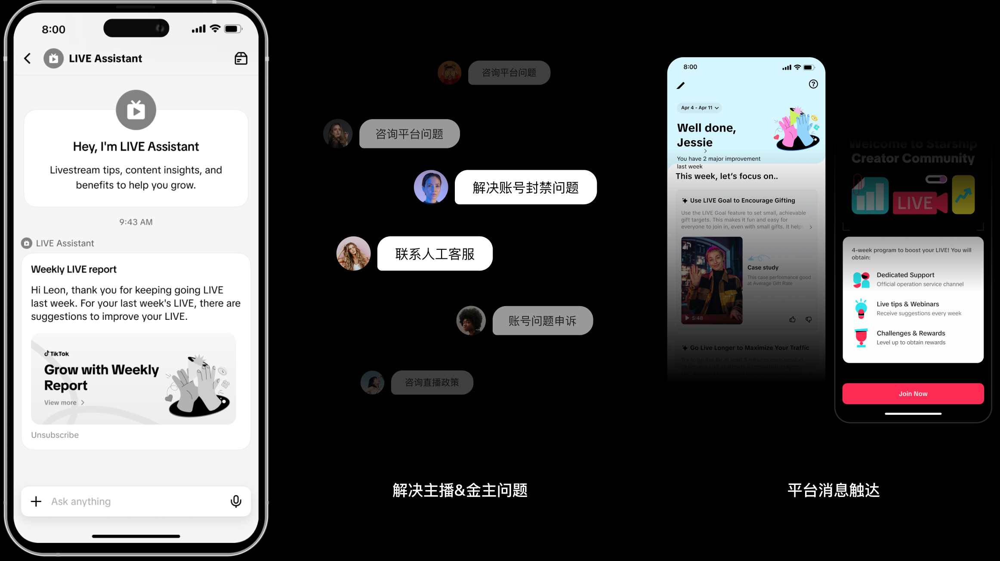
TikTok LIVE UX Project Montion Design
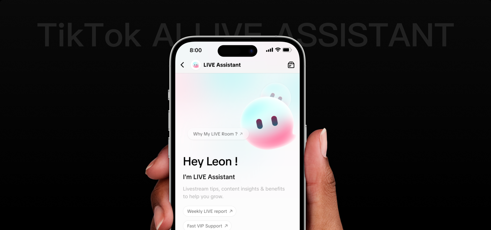
TikTok LIVE Assistant 体验设计主要将主播服务路径拆解为触达、价值感知、授权转化与持续服务等关键阶段，并针对不同层级主播的差异化诉求，整合成长建议、主播周报与专属客服，通过智能化、分层化的服务机制提升主播问题解决效率
TikTok LIVE Assistant 是在 C 端内一个长期存在的助手入口。用户既可以在这里接收主播报告、VIP 权益与活动邀约等消息，也可以围绕这些内容继续提问并获得帮助

Q3业务在引入AI功能之后，平台面临了许多的体验问题的升级
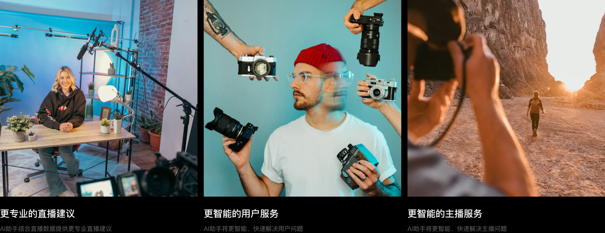
过去，BOT 负责标准回复，AI 主要用于检索用户记录并辅助人工判断，复杂问题仍需逐层转交。随着 AI 具备上下文理解、综合分析与自主判断能力，服务模式可以从“分层承接”转向“AI 优先分析与闭环，人工处理高风险及例外问题”
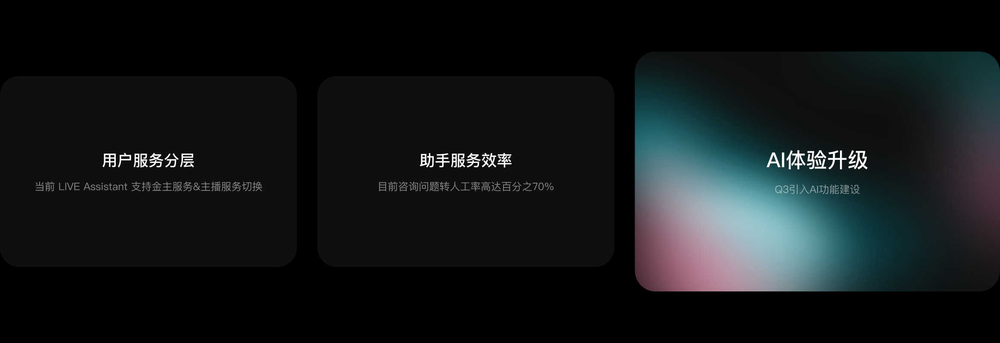
当 AI 从辅助检索升级为自主分析与解决，用户面对的不再只是一个问答入口，而是一个能够理解、判断并推动问题解决的服务主体
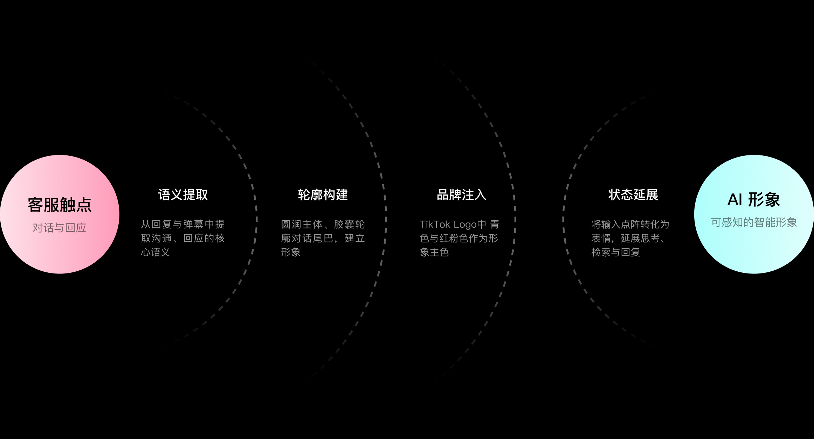
客服服务的核心动作是回应，因此形象从直播弹幕与客服回复气泡中自然生长
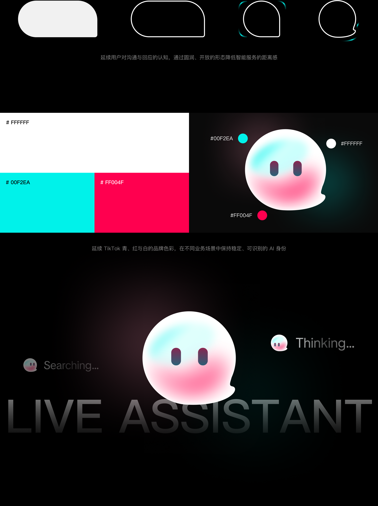
以输入点阵作为视觉语言，通过位置、数量与运动变化，表达等待、理解、分析和回应等不同状态
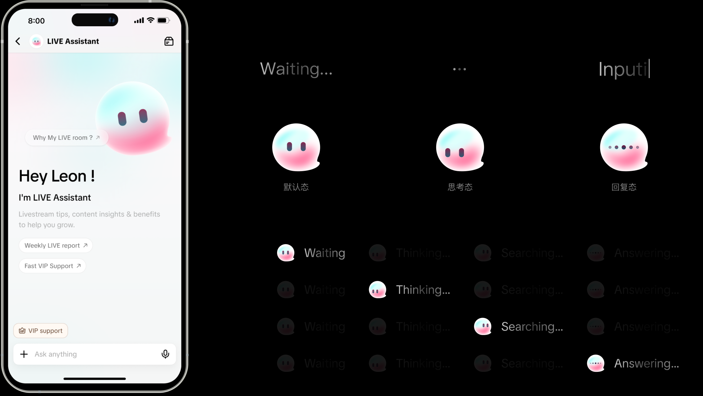
表情系统延续对话场景中的输入点阵，以两个点构成角色的基础眼睛，并通过数量、位置与运动节奏的变化，表达等待、思考、检索与回复等状态。
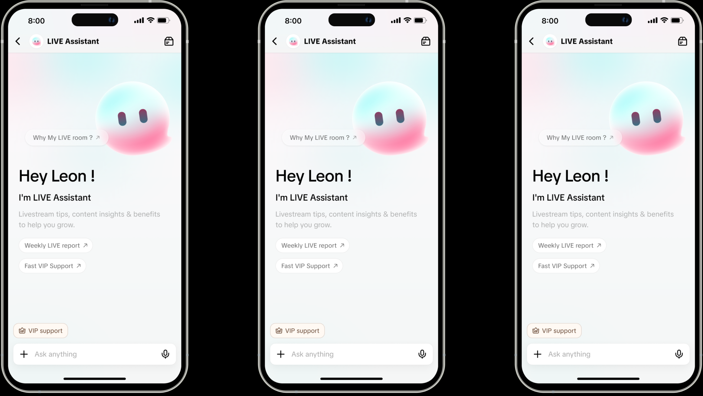
主播如何首次发现 AI LIVE Assistant, 并推动平台触达主播
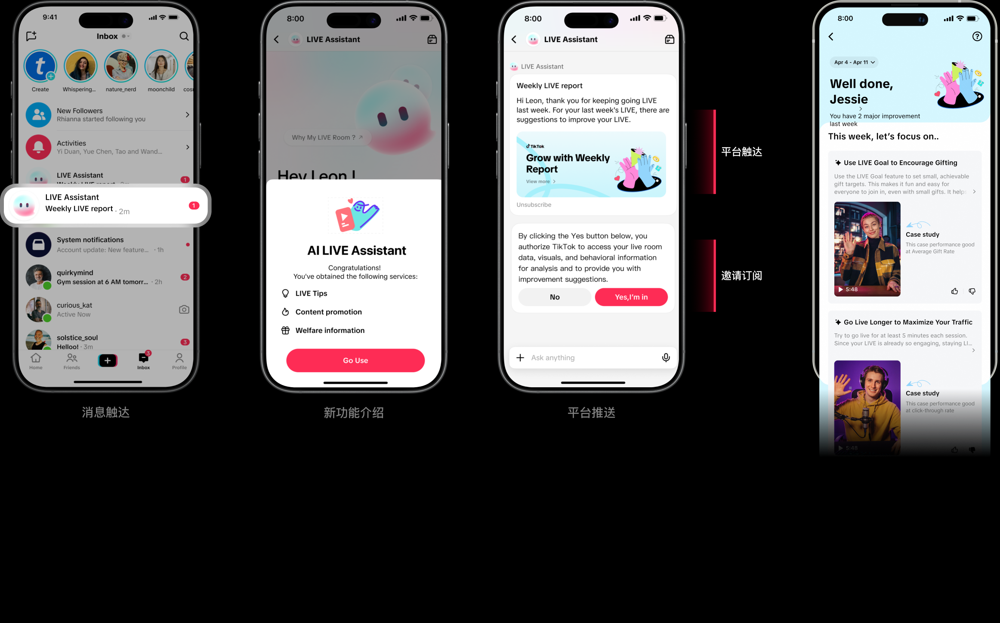
新框架下金主用户如何感知VIP权益
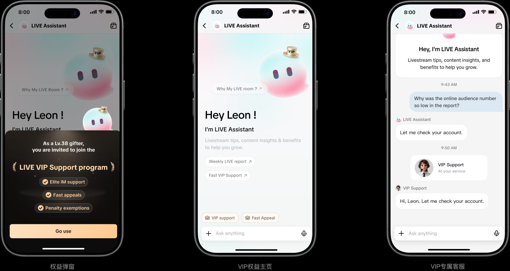
VIP 作为跨角色的服务身份保持稳定视觉识别；主播或消费身份只影响内容与权益推荐，避免双重身份用户在不同场景中频繁切换形象。
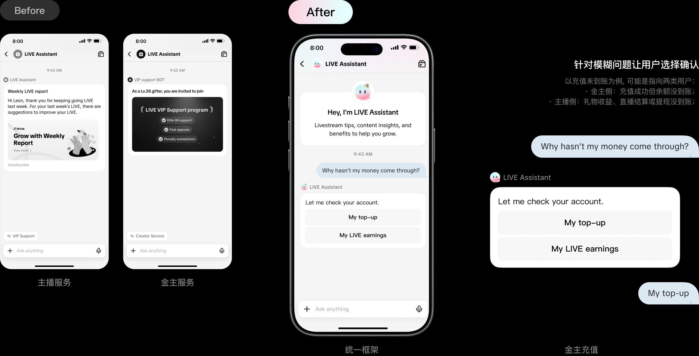
目前咨询问题转人工率高达百分之70%
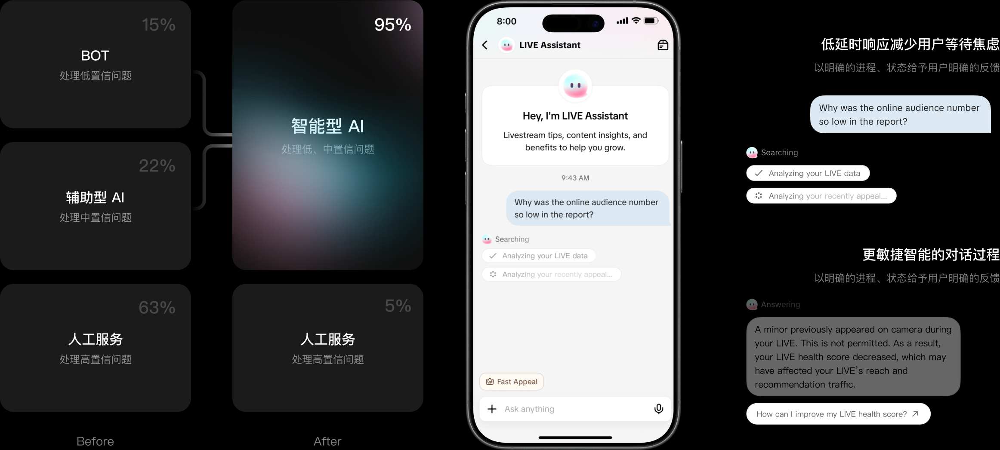
引入AI功能后, 我们希望整个流程更加智能
TikTok AI LIVE Assistant上线后并没有第一时间拿到详细的数据反馈
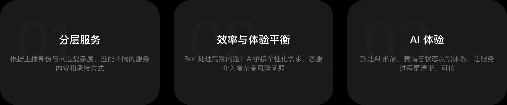